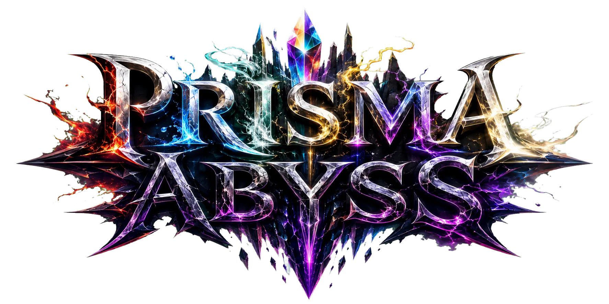
GAME FILE 01 / IN DEVELOPMENT
物語を追う。装備を掘る。お気に入りを育てる。
そして、もっと深く。
STORY / WORLD
六つの光が支えていた世界。
その均衡は、崩れ始めた。
火、水、風、雷、光、闇。六つのプリズムによって形作られた世界を巡る、剣と魔法の冒険。
失われたもの。すれ違った想い。そして、プリズム崩壊の先に待つものとは――。分かりやすい王道ファンタジーを入口に、旅を続けるほど「PRISMA」と「ABYSS」の意味が立ち上がっていきます。
王道RPGの冒険に、終わらない育成を。
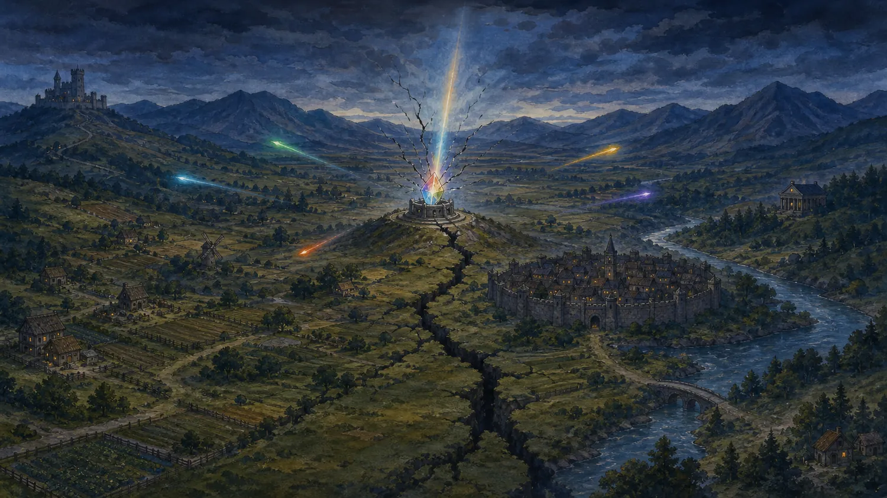
CHARACTERS / 26 ALLIES
誰と旅をしたいか。
強さだけでは、決まらない。
剣士、魔法使い、聖職者、騎士――。旅を続けるほど、異なる力と物語を持つ仲間が増えていきます。顔アイコンを選ぶと、立ち絵とプロフィールを確認できます。
SELECTED CHARACTER
勇者
アルス
深淵に選ばれたのではない。自ら、深淵へ向かう道を選んだ勇者。
タップ / クリックで仲間を選択
FOUR-PERSON PARTY攻める。守る。支える。崩す。役割の異なる4人を編成。
YOUR OWN ANSWERお気に入りを中心に組むか、強力なシナジーを追うか。正解はひとつじゃない。
EXPLORATION / BATTLE
次の景色を、
自分の足で見に行こう。
町を離れ、フィールドを越え、ダンジョンの奥へ。土地が変われば、出会う敵も、手に入るものも変わります。
戦闘は分かりやすいコマンドバトル。難しい操作ではなく、属性・スキル・装備・編成を考えて強くなる手応えを楽しめます。
- 4人パーティ
- AUTO周回対応
- SPEED速度変更
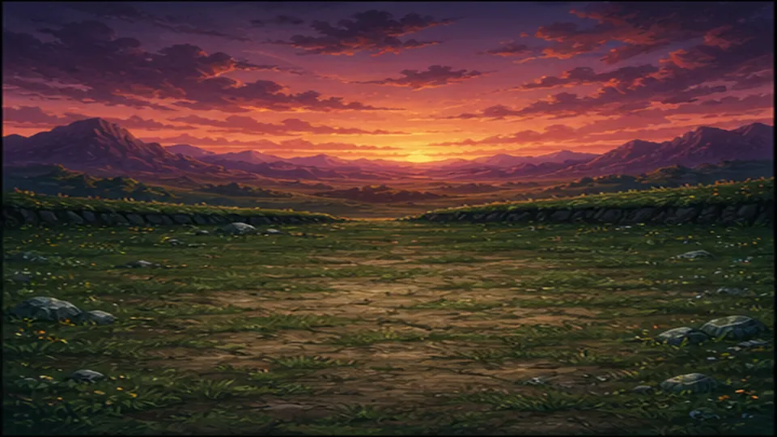
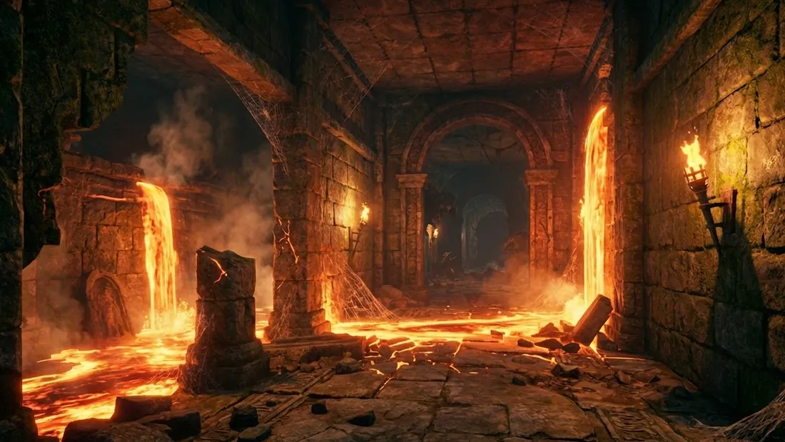
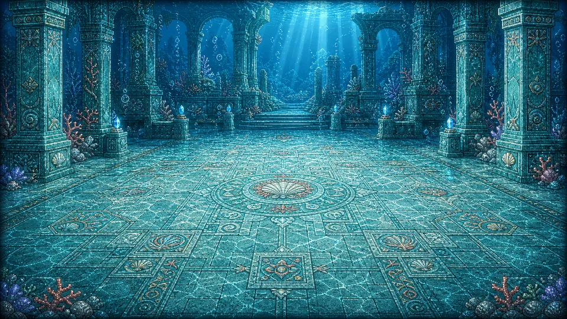
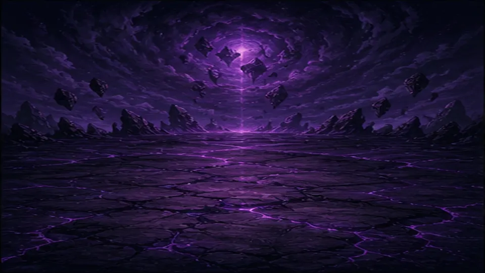
IN-GAME / MOBILE
この冒険を、
手のひらの中でも。
フィールド探索も、コマンドバトルも、装備の見極めも。PCだけでなく、スマートフォンの画面とタッチ操作に合わせたインターフェースを開発しています。
※掲載画面は開発中のものです。
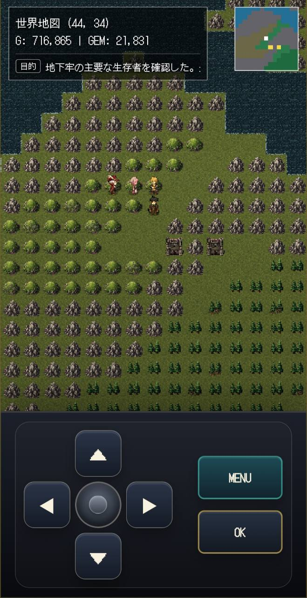
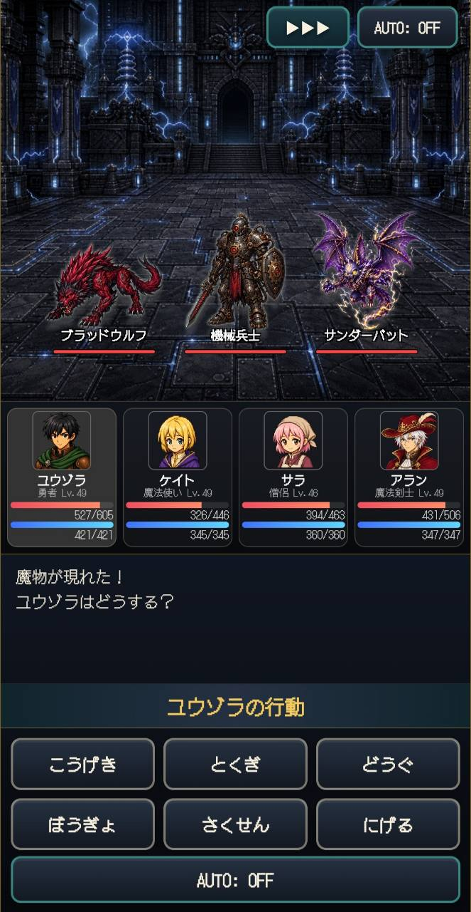
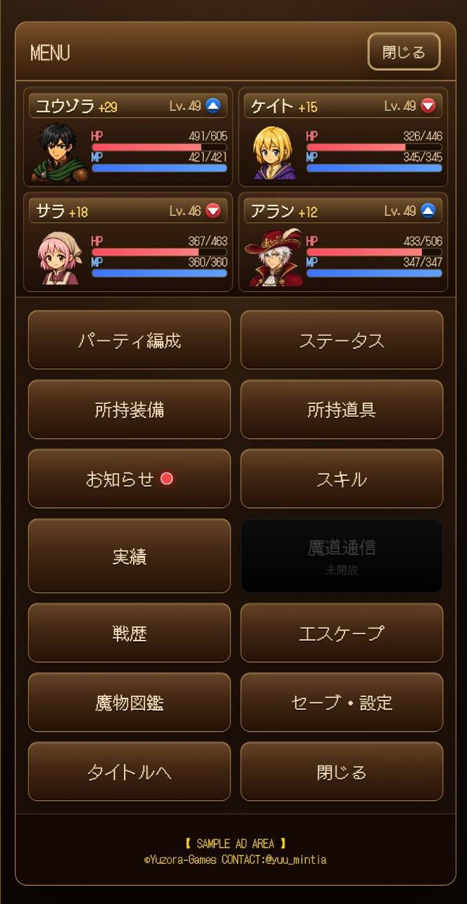
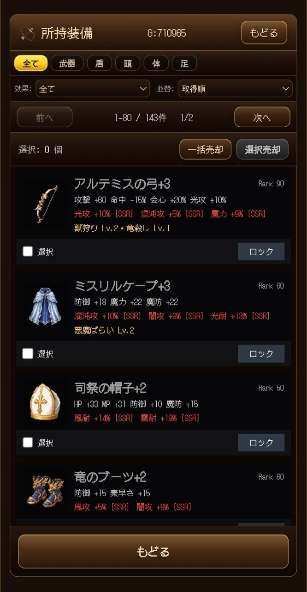
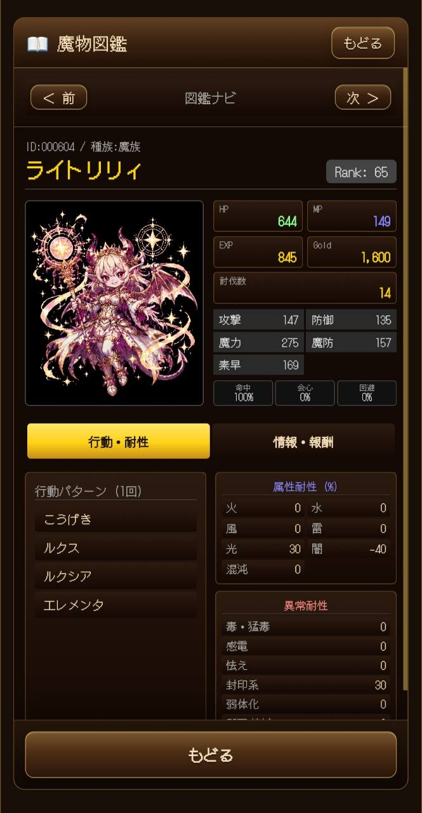
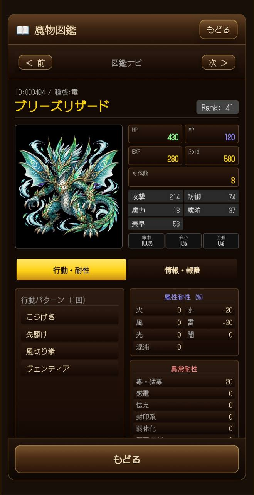
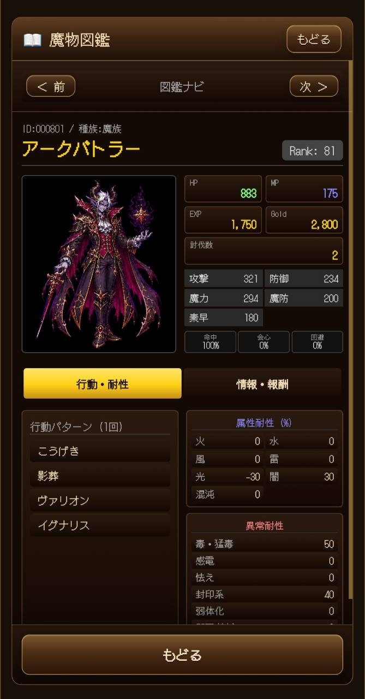
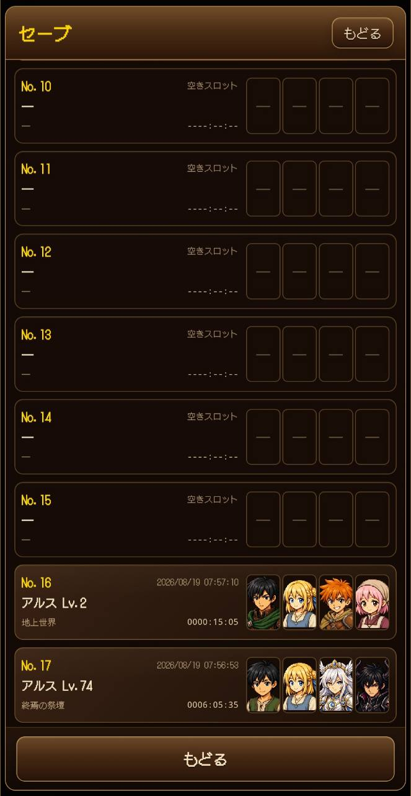
GAME LOOP
異なる「もう少し」が、ひとつの冒険につながっていく。
- 01探索するEXPLORE
- 02戦うBATTLE
- 03拾うLOOT
- 04育てるBUILD
- 05もっと先へGO DEEPER
新しい場所には、新しい敵がいる。強い敵からは、新しい戦利品が手に入る。手に入れた力で、今まで届かなかった場所へ。冒険を続けるほど、できることが増えていきます。
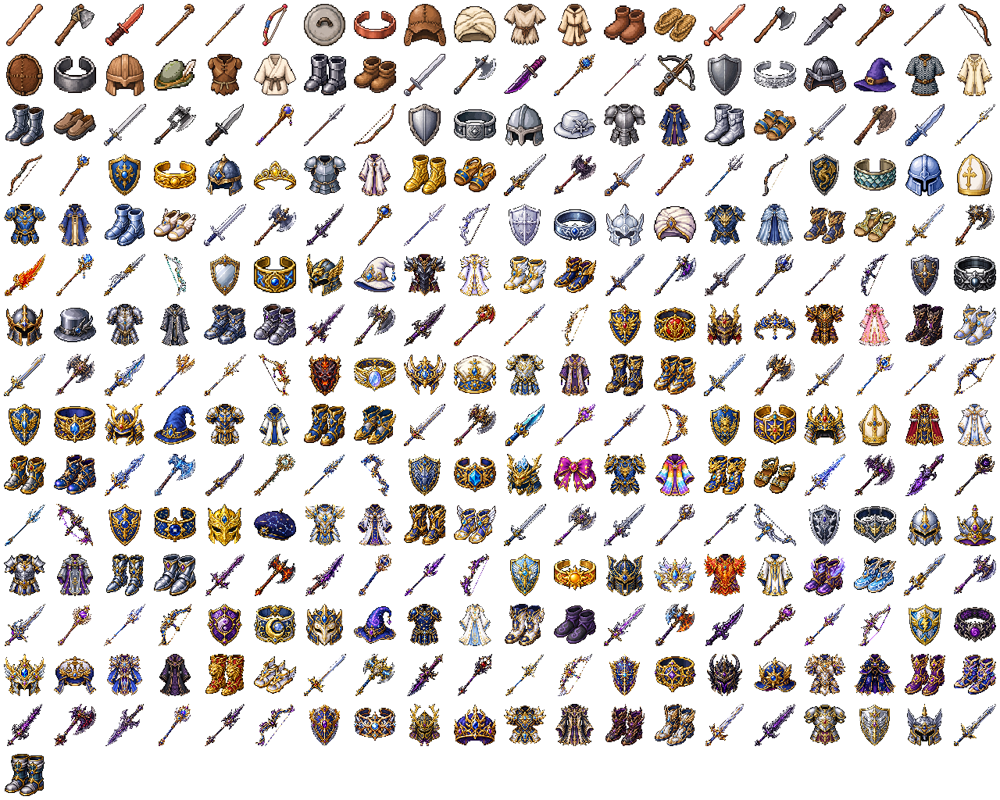
剣、斧、短剣、杖、槍、弓、盾、防具、装飾品――冒険の先で、装備の選択肢は広がり続ける。
LOOT / RANDOM EQUIPMENT
同じ剣でも、
同じ一振りとは限らない。
冒険で手に入る装備には、さまざまな能力が付与されます。敵を倒すたび、宝箱を開けるたび、「次はもっといいものが出るかもしれない」。
攻撃力を見るか。特性との相性を選ぶか。今のパーティにぴったりの一品を探すか。拾った装備から、新しいビルドが始まることもあります。
RANDOM OPTIONS
同名装備にも異なる付与能力。手に取るたび、見極める楽しさが生まれます。
SYNERGY
仲間、装備、特性の組み合わせが噛み合えば、戦い方そのものが変わります。
BLACKSMITH
合成、強化、精錬。気に入った一品を、自分の戦力として完成させていきます。
MONSTERS / BESTIARY
346MONSTERS
かわいい。かっこいい。
……なんだ、こいつ？
姿も能力もさまざまな魔物が346体登場。新しい土地へ向かい、まだ見ぬ敵と出会うたび、魔物図鑑が少しずつ旅の記録になっていきます。
強さを求めるだけが冒険じゃない。きっと、あなたのお気に入りも見つかるはず。
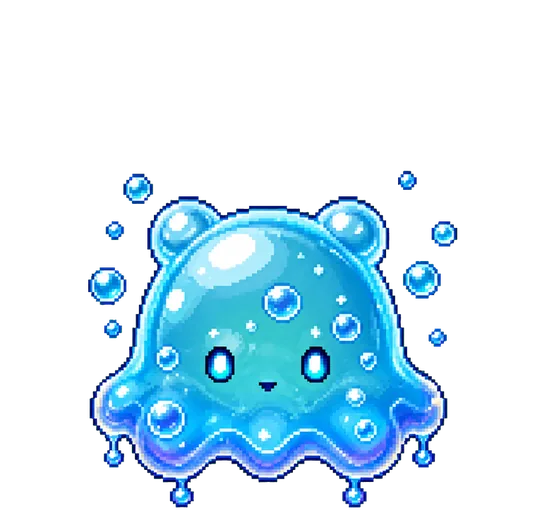
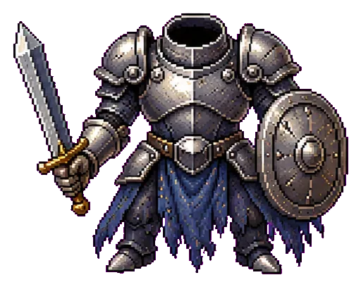
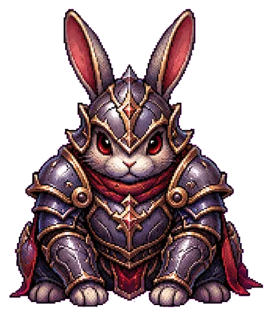
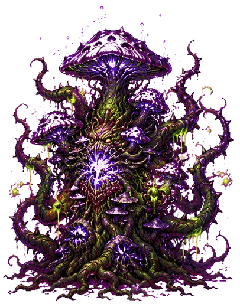
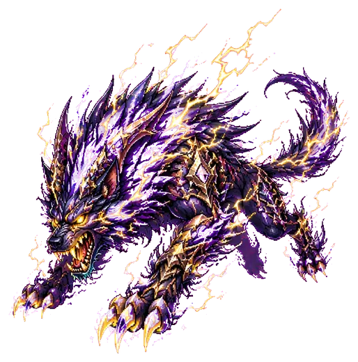
出会った魔物の数だけ、旅の記録が増えていく。
BEYOND THE STORY
物語には終わりがある。
育成には、その先がある。
本編で出会った仲間、掘り当てた装備、考え抜いたビルド。そのすべてを持ち込んで、自分の限界へ挑む場所があります。
ENDLESS CHALLENGE01
深淵の亀裂
より強い敵。より深い階層。より高い壁。昨日届かなかった場所へ、今日は届くかもしれない。どこまで潜れるか、自分のパーティで確かめる終わりなき挑戦。
LONG-TERM GROWTH02
転生
成長の一部を新たな力へ変え、再び歩き出す。一度目より速く、一度目より強く、そして前には届かなかった場所へ。強くなること自体を、長く楽しめます。
COLLECTION03
やり込み
装備を集める。図鑑を埋める。実績に挑む。すべてを極めてもいい。気になるものだけ追いかけてもいい。自分なりのコンプリートを見つけられます。
PLAY ANYWHERE
冒険は、ブラウザからすぐ始まる。
PC・スマートフォンに対応。インストールせずに始められ、アプリとして追加して遊ぶこともできます。セーブデータの出力・読込にも対応しています。
- DEVICE
- PC / SMARTPHONE
- INSTALL
- NOT REQUIRED
- SAVE
- LOCAL / EXPORT & IMPORT
BEFORE PLAY
プレイ前のご案内
- 現在も開発中です。シナリオ、データ、ゲームバランス、UIを継続して更新しています。更新によって仕様が変わる場合があります。
- セーブデータは端末側に保存されます。ブラウザのデータ削除や端末変更に備え、ゲーム内のエクスポート機能をご利用ください。
- PC・スマートフォンの両方に対応します。フィールド操作はタッチ操作を含めて設計し、戦闘にはAUTO・速度変更を用意しています。
- 不具合報告について。再現手順、使用端末、ブラウザ名を添えていただくと確認しやすくなります。
掲載画像はPRISMA ABYSSのゲーム素材を使用しています。開発中のため、実際のゲーム画面・データ・仕様は更新される場合があります。